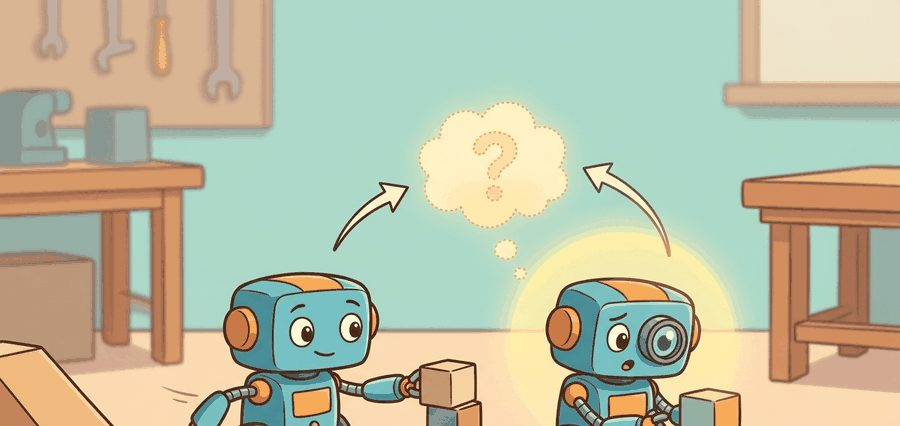
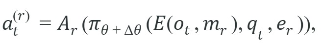
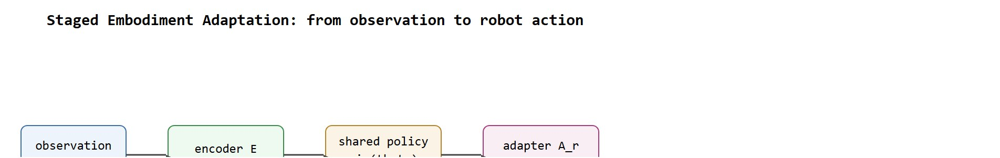

"A new robot is not a new prompt; it is a new contract with gravity, timing, and hardware limits."
An Adaptation Engineer

This section assumes familiarity with the action-space and kinematic conventions introduced in sections 5.4 and 5.7, and with the diffusion action head architecture covered in section 22.4. The adaptation levers described here are extended in section 35.6, which examines how data scale and compute budgets constrain which levers a team can realistically use. The same staged adaptation logic recurs in Part 9 alongside manipulation-specific transfer in section 42.7.
A warehouse operator swaps in a new 6-DoF arm overnight and expects the foundation model that ran yesterday's 7-DoF robot to keep working by morning. In practice that expectation is achievable, but typically only if you treat embodiment transfer as a hardware contract problem before you treat it as a prompting problem. The robot hardware boom of the mid-2020s means teams routinely deploy one shared policy across five or more different arms, grippers, and mobile bases. Understanding which lever to pull first, calibration metadata, embodiment tokens, action adapters, or weight updates, is the difference between a one-hour retrofit and a week of failed fine-tuning. This section gives you that decision logic and the hands-on tools to apply it.
As Figure 35.5A suggests, adapting to a new robot is less about giving the policy a new identity and more about snapping the right adapter plate between a shared prior and an embodiment-specific contract. Moving to a new robot can alter camera topology, frame conventions, control frequency, gripper state, actuator delay, and safety envelopes. Language conditioning may stay almost unchanged while the motor contract changes completely. That asymmetry is why adaptation pipelines usually begin with calibration and action remapping before they touch model weights.
The common mistake is to treat "prompting and conditioning" as if embodiment transfer were mostly a semantic problem. In reality, prompting is only one conditioning channel among many. Embodiment tokens, calibration metadata, action adapters, and low-rank fine-tuning all compete to absorb different parts of the shift. This ordering matters in practice. On an OpenVLA backbone moving from a Franka Panda to a WidowX arm, end-to-end fine-tuning through a mismatched action interface burned hundreds of demonstrations to recover task success. Inserting a linear action adapter on the WidowX joint-velocity range first cut that cost to tens of demonstrations (OpenVLA, Stanford / UC Berkeley, 2024). That is the interface-first rule in numbers, and it is the fastest argument against skipping calibration.
If the new robot uses different frames, units, or control limits, prompt engineering is the wrong first tool. Start with the contract mismatch.
To act on the interface-first rule rather than merely assert it, we need a way to name each place the embodiment shift can be absorbed, which is what the following decomposition provides.
One useful decomposition is

where $m_r$ is embodiment metadata, $e_r$ is an embodiment token or descriptor, $A_r$ is the robot-specific action adapter, and $\Delta\theta$ is any fine-tuning update. Keep each term honest: metadata handles known configuration, tokens capture coarse robot identity, adapters handle command semantics, and weight updates cover only what genuinely needs learning. The diagram below traces the equation as a left-to-right data path, showing where each term acts as an observation becomes an action.

Consider a specific case: a shared policy trained on a 7-DoF (degrees of freedom) tabletop arm at 10 Hz transfers to a 6-DoF arm with a parallel-jaw gripper running at 25 Hz. The metadata term $m_r$ encodes the new control frequency and gripper type as structured fields. The policy reads these directly rather than inferring them from context. The embodiment token $e_r$ is a short learned descriptor, for example a 16-dimensional vector, that shifts the policy's latent distribution toward the new kinematic regime.
The token matters because a shared backbone trained across diverse robots learns an average motor behavior that is wrong for any single robot. Counterintuitively, a policy trained on 50 robots often performs worse out of the box on robot 51 than a policy trained on just 5 robots in the same kinematic family. The larger training set pulls the average further from any individual embodiment. Without a bias toward the target embodiment, the policy issues torques calibrated for an arm that never existed. On hardware, that mismatch produces overshoot, wrist instability, or gripper commands sized for the wrong jaw width. Those failures cause physical damage or task failure rather than merely lower accuracy. Mechanically, the system concatenates $e_r$ with the observation embedding before the first transformer layer. During adaptation, gradient descent updates only $e_r$ on a small demonstration set while the backbone stays frozen, so the token pulls activations toward the subspace the new robot occupies. The action adapter $A_r$ rescales joint-velocity commands from the original normalized range to the new hardware limits and reorders the DoF indices to match the new URDF (Unified Robot Description Format, the XML file that specifies a robot's joints, links, and kinematic tree). Because the camera setup is unchanged, $\Delta\theta$ is zero. In this case, adaptation needs no weight updates and typically costs a few minutes of calibration rather than hours of fine-tuning.
So far: the interface-first rule splits an embodiment shift into four distinct repair channels, metadata for known configuration ($m_r$), a learned embodiment token for coarse robot identity ($e_r$), an action adapter for unit and ordering mismatches ($A_r$), and weight updates ($\Delta\theta$) reserved for whatever gap remains, so that in the frequency-and-gripper example above only the metadata and token terms were needed and $\Delta\theta$ stayed at zero.
When the action adapter must bridge a control-frequency mismatch, remember to rescale the action chunk length alongside the velocity magnitudes. For example, a policy trained at 10 Hz with a chunk of 10 steps produces a one-second horizon; at 25 Hz you need 25 steps for the same horizon, so the LeRobot ActionChunkAdapter accepts a target_hz argument that handles both rescalings together. Changing only the velocity scale while leaving the chunk length at the original value is one of the most common causes of jerky or prematurely-terminated execution when moving to faster hardware.
What happens when a team skips these steps and dials straight to fine-tuning? In practice, the policy receives corrupted action targets: velocities scaled for the wrong arm, DoF indices pointing at joints that do not exist on the new robot, and a chunk length that cuts motion trajectories in half. The fine-tuning loop then attempts to learn its way out of a broken interface, wasting demonstrations and often ending in hardware faults. The algorithm below exists precisely to prevent that sequence.
Input: Pre-trained policy $\pi_\theta$, new robot specification $r$ (URDF, sensor tree, control frequency $f_r$, action limits), task language $\ell$, demonstration set $\mathcal{D}_r$ (may be empty)
Output: Adapted policy $\pi^*$ ready for deployment on $r$, adaptation manifest recording which levers were activated
Trace the adapter $A_r$ with concrete numbers. The source policy was trained at 10 Hz with a chunk of 10 steps and outputs normalized joint velocities in [-1, 1] over 7 joints, with DoF order [j0, j1, j2, j3, j4, j5, gripper]. The target is a 6-DoF arm at 25 Hz whose hardware velocity limit is 1.8 rad/s and whose URDF orders joints [j0, j2, j1, j3, j4, gripper] (note j1 and j2 swapped, no j5). Take a single policy output vector v = [0.50, -0.20, 0.80, 0.00, 0.10, 0.40, 1.00]. Step 1, drop the unused j5 channel (index 5): keep [0.50, -0.20, 0.80, 0.00, 0.10, 1.00]. Step 2, reorder to the target URDF [j0, j2, j1, j3, j4, gripper]: [0.50, 0.80, -0.20, 0.00, 0.10, 1.00]. Step 3, rescale the 5 arm channels by the hardware limit 1.8: [0.90, 1.44, -0.36, 0.00, 0.18] rad/s, and map the gripper 1.00 to the fully-closed command. Step 4, fix the chunk length: $H_r = \lceil 10 \cdot 25 / 10 \rceil = 25$ steps, so the 10-step chunk is interpolated to 25 steps to preserve the one-second horizon. The result is a hardware-legal command vector; no weight update was touched.
Code Fragment 1 turns that decomposition into a practical decision rule.
# Choose the cheapest adaptation path that matches the interface mismatch.
cases = [
{"robot": "same_arm_new_task", "camera_changed": False, "action_changed": False, "new_language": True},
{"robot": "new_gripper_same_arm", "camera_changed": False, "action_changed": True, "new_language": False},
{"robot": "mobile_manipulator", "camera_changed": True, "action_changed": True, "new_language": True},
]
for case in cases:
if not case["camera_changed"] and not case["action_changed"]:
decision = "prompt or small data fine-tune"
elif case["action_changed"] and not case["camera_changed"]:
decision = "action adapter plus validation"
else:
decision = "adapter, calibration, and post-training data"
print(f"{case['robot']}: {decision}")same_arm_new_task: prompt or small data fine-tune new_gripper_same_arm: action adapter plus validation mobile_manipulator: adapter, calibration, and post-training data
The expected output is a routing table that chooses the lightest adaptation lever compatible with the actual source of mismatch. The important interpretation is that prompt-only adaptation is reserved for semantic drift on familiar hardware, while embodiment shifts route immediately toward adapters, calibration, or parameter updates.
The manual routing logic is tiny, but real adaptation workflows in OpenVLA, LeRobot, and openpi give you a maintained place to store calibration, embodiment metadata, fine-tuning configs, and evaluation results. The library path removes glue-code overhead while keeping the adaptation manifest reproducible.
Now that each term in the adaptation equation has a distinct job, it helps to see the four levers side by side, so that the routing logic in the code above becomes a matter of matching each mismatch to the one lever built to repair it.
| Lever | Best for | Weakness |
|---|---|---|
| Prompting | Task phrasing and semantic emphasis on familiar hardware | Cannot repair wrong action scales or stale calibration |
| Embodiment token or descriptor | Coarse robot identity inside a shared policy | Too weak if the command semantics are fundamentally different |
| Action adapter | Frame, unit, and actuator differences | Still needs validation under latency and saturation |
| LoRA or other fine-tuning | Persistent task or embodiment gaps after interface alignment | Easy to overfit if the evaluation panel is small |
A common misconception is that swapping in a different embodiment token is enough to transfer a policy to a new robot, because the token is described as capturing "robot identity." In the embodied AI context, however, an embodiment token shifts the policy's latent distribution toward a new kinematic regime but has no mechanism to rescale joint-velocity magnitudes, reorder degrees-of-freedom indices, or adjust the action chunk length to match a new control frequency. Those mismatches live in the action contract, not in the latent space, and the action adapter $A_r$ is the only component in the pipeline designed to repair them. The correct mental model is that the embodiment token corrects for distributional bias in the backbone while the action adapter corrects for unit, ordering, and timing mismatches at the hardware interface; neither can substitute for the other.
Think of the embodiment token as the seasoning a cook adds when switching from a gas burner to an induction hob: it recalibrates their intuitions about heat response and timing so the recipe "feels right" again, but it does not change the pan size, the measuring cups, or the clock on the wall. The action adapter is everything else in the kitchen that physically must match the new stove. Adjusting only your intuitions while keeping the wrong pan size still burns the dish.
If a new robot fails because the gripper saturates late or the camera frame is misregistered, no prompt will fix it. Treat prompting as a semantic tool, not as a substitute for calibration and control hygiene.
The OpenVLA team reported that fine-tuning roughly 7B parameters end-to-end on a new robot required on the order of hundreds of demonstrations and multiple GPU-hours, while inserting only a linear action adapter (the $A_r$ term) reduced the data requirement to tens of demonstrations for tasks where camera topology was unchanged. The pi-zero family (openpi) uses a similar staged strategy: the diffusion action head absorbs embodiment-specific timing and actuator range, while the shared vision-language backbone receives only short embodiment descriptor strings. These concrete tradeoffs show that the column "Weakness" in the table above is not theoretical: overloading prompting or the embodiment token when the action contract has changed demonstrably degrades task success rates in published evaluations.
A lab adapting an open VLA from a tabletop arm to a mobile manipulator might keep the language head, add embodiment metadata for the new camera tree, build an action adapter for base-plus-arm commands, then use a small amount of post-training data to recover task-specific precision. That staged pipeline is far cheaper than relearning the whole stack from scratch.
Prompting a miscalibrated robot to "please be accurate" is like adding manners to a broken ruler.
For a new robot with unchanged task language but a new gripper and slower control loop, which adaptation lever comes first: prompting, embodiment token, action adapter, or weight update? Explain why in one sentence.
Direction 1: Zero-shot cross-embodiment transfer via universal action tokenization. Rather than building robot-specific adapters, recent work discretizes continuous actions into a shared vocabulary that multiple embodiments share at the token level. CrossFormer (Doshi et al., 2024, UC Berkeley / Stanford) trains a single transformer across 20 robot types using action-space tokens that are predicted rather than regressed, reducing per-robot adapter engineering to a tokenizer calibration step. The central challenge is that tokenization granularity sets a hard floor on precision: tasks requiring sub-millimeter contact control expose gaps that cannot be recovered by token-budget expansion alone.
Direction 2: In-context embodiment adaptation without gradient updates. Inspired by few-shot prompting in language models, several 2024-2025 efforts have explored whether a policy can adapt to a new robot purely from a handful of in-context demonstration trajectories, with no weight update or explicit adapter construction. Octo (Ghosh et al., 2024, UC Berkeley) conditions a transformer policy on short demo sequences at inference time and shows positive transfer to unseen robots with as few as five trajectories. The limit is that in-context conditioning saturates quickly when the new embodiment differs structurally (for example, wheeled base versus fixed arm), because the backbone has no mechanism to update its internal kinematic priors.
Direction 3: Embodiment-aware safety filtering during adaptation. Physical Intelligence and collaborators have begun studying how to certify that an adapted policy is safe on shared-workspace hardware without exhaustive rollouts. The pi-zero-fast variant (2025) couples a lightweight model with a constraint layer that clips actions whose predicted force exceeds a learned per-robot threshold, enabling faster deployment validation. Certifying these thresholds from limited demonstrations remains an open engineering and regulatory question.
Open problem: Design a data-efficient protocol that, given at most 20 demonstrations on a new robot, produces a calibrated upper bound on unsafe action probability for a frozen-backbone plus action-adapter policy. Current practice relies on heuristic safety margins or full rollout sweeps; a principled bound that scales with demonstration count and hardware-spec uncertainty would substantially reduce the gap between lab adaptation and real deployment.
Physical Intelligence's pi-zero (openpi) is deployed as a single foundation policy across structurally different platforms, from fixed bimanual arms to mobile manipulators, by routing embodiment differences into the diffusion action head and short descriptor strings rather than retraining the shared vision-language backbone per robot. This staged-adapter strategy lets a new arm reuse the same backbone weights, so onboarding a fresh embodiment becomes a calibration-and-descriptor task instead of a multi-GPU-hour fine-tuning run.
Goal: Show empirically that an embodiment shift routed through prompting or a token alone cannot recover what a simple action adapter fixes in seconds. Tools: Python, Gymnasium, and the MuJoCo Reacher-v5 (or Pusher-v5) environment; optionally Stable-Baselines3 for a quick pre-trained policy. Setup: Train or load a policy on the default environment, then create a "new robot" by wrapping the env so the action vector is rescaled (multiply by 0.5), reordered (swap two action dimensions), and the control step is doubled. What to vary: (1) no adapter, run the original policy directly on the modified env; (2) add only a learned bias vector (a stand-in for an embodiment token) fit on 20 rollouts with the policy frozen; (3) add a hand-built action adapter that inverts the scale and reorder and re-samples to the new step rate. What to observe: mean episode return and action-saturation rate across 50 evaluation episodes for each condition. Expected finding: the bias-only condition recovers little return while the action adapter recovers most of it at near-zero data cost, reproducing the interface-first ordering in miniature. Budget 15-30 minutes.
Adapting to a new robot is a sequencing problem. First align the embodiment contract, then choose the lightest learning mechanism that closes the remaining gap.
Write an adaptation plan for moving an open VLA from a fixed tabletop arm to a wheeled mobile manipulator. Separate what you would solve with metadata, an action adapter, prompting, and parameter updates.
Beginner (weekend): Build a control-frequency adapter in Python using Gymnasium and a simulated Pendulum-v1 environment: load a policy trained at 10 Hz, wrap it with an interpolation adapter that re-samples commands to 25 Hz, and measure the change in episode reward before and after the adapter. The key challenge is choosing whether to hold, interpolate, or re-query the policy at each intermediate step without accumulating phase lag.
Intermediate (1-2 weeks): Use LeRobot and a MuJoCo Franka Panda simulation to implement the staged embodiment adaptation algorithm from this section: collect 30 demonstrations on a 7-DoF arm, build an action adapter that remaps joint ordering and velocity scales for a 6-DoF variant with a different gripper, train a 16-dimensional embodiment token with the backbone frozen, and report task success before and after each stage. The key challenge is verifying that adding the embodiment token improves success independently of the action adapter so that the contribution of each lever is separable.
Advanced (3-4 weeks): Transfer an OpenVLA checkpoint to a wheeled mobile manipulator in Isaac Lab: implement the full adaptation manifest (metadata, action adapter for base-plus-arm commands, LoRA fine-tuning on 50 demonstrations), then run a calibration sweep measuring saturation and latency statistics as a function of LoRA rank. The key challenge is designing a calibration suite rigorous enough to catch unsafe action scales before deploying on hardware that shares a workspace with people.
Section 35.6 looks at the less glamorous side of the story: data scale, compute budgets, and the trade-offs between open and closed stacks when a lab has to choose where to invest effort.
Physical Intelligence. "openpi" repository.
The main open reference for pi-zero family models and an important source for adaptation interfaces.
Useful for fine-tuning and inference interfaces around open VLA backbones.
A practical source for dataset, policy, and evaluation workflows on accessible hardware.